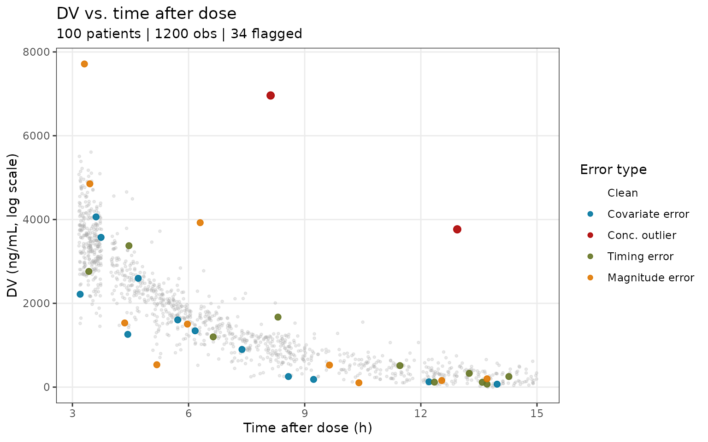
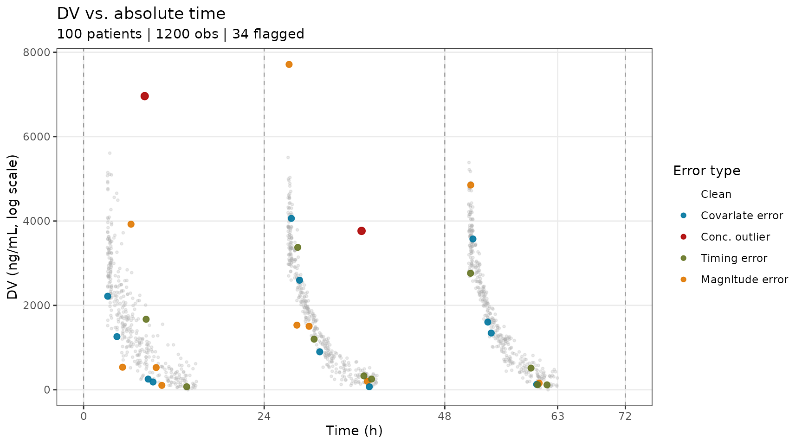
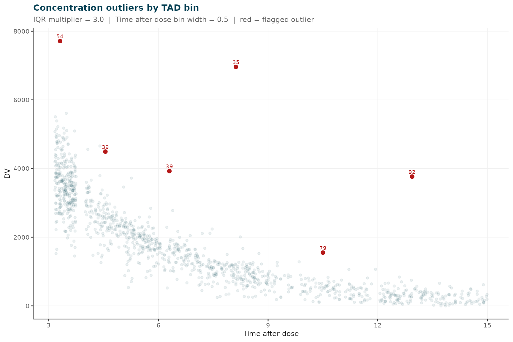
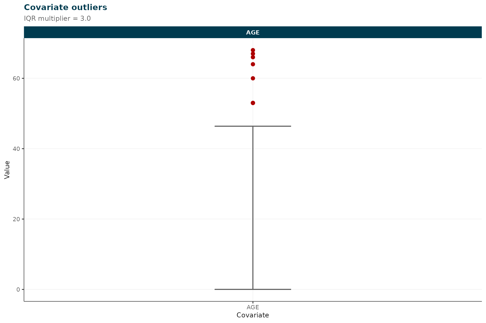
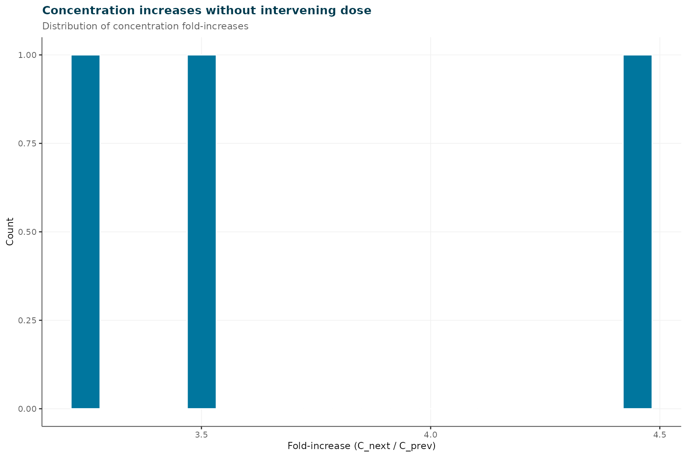

Simulated Busulfan PK: Part 1 — Gross QC and Exclusion Criteria
Source:vignettes/busulfan_pt1_gc_exclusion.Rmd
busulfan_pt1_gc_exclusion.RmdOverview
This vignette covers Phase 1 of an
irxclean analysis: model-independent data screening before
a base NONMEM model is fitted. It walks through:
- Loading and visualising the simulated busulfan dataset
- Gross data quality screening with
assess_data_quality() - Investigating covariate anomalies that IQR-based screening misses
- Applying structured exclusion criteria with
apply_exclusion_criteria() - Saving the cleaned, analysis-ready dataset for Part 2
Part 2 (
busulfan_pt2_modelbased_cleaning) picks up from the output of this vignette and demonstrates NONMEM-based iterative CWRES outlier removal. Run this vignette first and savebusulfan_pt1_ready.csvbefore proceeding.
Dataset and intentional errors
The dataset (busulfan_sim.csv) was generated with
PKPDsim using a two-compartment IV busulfan population
PK model (ADVAN3 TRANS4, allometric FFM scaling, maturation,
time-varying CL, IIV + IOV). 100 patients (80 paediatric, 20 adult) each
received 4 MAP-adapted doses, with 4 TDM samples per dose (1,200
observations total).
The following intentional errors were introduced:
| FLAG bit | Error type | Count |
|---|---|---|
| 1 | Covariate weight: decimal-place shift (e.g. 22.0 kg -> 2.2 kg) | 1 patient |
| 2 | Concentration IQR outlier (>3*IQR above Q3 per TAD bin) | 2 observations |
| 4 | Timing error (+/- 5, 10, 30, or 60 minutes from true time) | 10 observations |
| 8 | Concentration magnitude error (multipliers 0.25–1.75x) | 10 observations |
1. Load the dataset
dat <- read.csv(system.file("extdata", "busulfan_sim.csv", package = "irxclean"))
cat(sprintf(
"Patients: %d | Rows: %d | Observations: %d\n",
length(unique(dat$ID)), nrow(dat), sum(dat$EVID == 0)
))
#> Patients: 100 | Rows: 1600 | Observations: 1200
err_obs <- dat[dat$FLAG > 0 & dat$EVID == 0,
c("ID", "TIME", "DV", "FLAG", "FLAG_LABEL")]
cat("Flagged observations (ground truth):\n")
#> Flagged observations (ground truth):
print(err_obs[order(err_obs$FLAG, err_obs$ID), ])
#> ID TIME DV FLAG FLAG_LABEL
#> 1202 76 3.20000 2216.8093 1 covariate_weight
#> 1203 76 4.43000 1259.3036 1 covariate_weight
#> 1204 76 8.58000 252.9989 1 covariate_weight
#> 1205 76 9.23000 184.1580 1 covariate_weight
#> 1207 76 27.61000 4062.5074 1 covariate_weight
#> 1208 76 28.70000 2597.1720 1 covariate_weight
#> 1209 76 31.38000 899.3427 1 covariate_weight
#> 1210 76 37.97000 70.3334 1 covariate_weight
#> 1212 76 51.74000 3574.7893 1 covariate_weight
#> 1213 76 53.72000 1604.0418 1 covariate_weight
#> 1214 76 54.17000 1344.3210 1 covariate_weight
#> 1215 76 60.21000 127.1840 1 covariate_weight
#> 548 35 8.12000 6960.6921 2 conc_iqr_outlier
#> 1466 92 36.94000 3766.0920 2 conc_iqr_outlier
#> 223 14 61.58667 115.7197 4 timing_10min
#> 357 23 13.71000 71.4174 4 timing_30min
#> 762 48 37.25000 328.3775 4 timing_30min
#> 841 53 30.63667 1199.1323 4 timing_5min
#> 1114 70 38.27333 253.0690 4 timing_10min
#> 1239 78 28.46000 3375.0725 4 timing_60min
#> 1279 80 60.35000 119.3422 4 timing_60min
#> 1372 86 51.42333 2761.5047 4 timing_5min
#> 1412 89 8.31000 1671.2129 4 timing_30min
#> 1503 94 59.46000 514.1154 4 timing_60min
#> 179 12 5.18000 534.3144 8 magnitude_0.25x
#> 200 13 28.35000 1532.0964 8 magnitude_0.60x
#> 277 18 10.40000 104.0891 8 magnitude_0.40x
#> 287 18 60.54000 157.6999 8 magnitude_1.05x
#> 378 24 37.71000 198.8850 8 magnitude_0.95x
#> 612 39 6.30000 3924.9722 8 magnitude_1.40x
#> 620 39 51.45000 4853.0208 8 magnitude_1.60x
#> 821 52 9.64000 526.2569 8 magnitude_1.20x
#> 855 54 27.31000 7712.7429 8 magnitude_1.75x
#> 1224 77 29.97000 1504.1938 8 magnitude_0.80xThe FLAG and FLAG_LABEL columns record the
ground-truth errors introduced during simulation. In a real analysis
these columns would not exist; they are shown here to let you assess how
well each screening method performs.
2. Concentration vs. time-after-dose
Visualising the raw concentration data is the first step in any PK cleaning workflow. Plotting DV against both time-after-dose (TAD) and absolute time lets you spot structurally implausible values before any model is fitted.
ggplot2::ggplot() +
.pk_layers("TAD", "Time after dose (h)", c(3, 6, 9, 12, 15)) +
ggplot2::labs(
title = "DV vs. time after dose",
subtitle = sprintf("%d patients | %d obs | %d flagged",
dplyr::n_distinct(obs$ID), nrow(obs),
sum(obs$error_type != "Clean"))
)
DV vs. time after dose (TAD). TDM samples drawn randomly from four post-infusion windows (10-45 min, 1-3 h, 3-6 h, 6-12 h after end of the 3-h infusion).
dose_times <- unique(dat$TIME[dat$EVID == 1])
ggplot2::ggplot() +
.pk_layers("TIME", "Time (h)", c(0, 24, 48, 63, 72)) +
ggplot2::geom_vline(xintercept = dose_times, linetype = "dashed",
colour = "#999999", linewidth = 0.4) +
ggplot2::labs(
title = "DV vs. absolute time",
subtitle = sprintf("%d patients | %d obs | %d flagged",
dplyr::n_distinct(obs$ID), nrow(obs),
sum(obs$error_type != "Clean"))
)
DV vs. absolute time. Vertical dashed lines mark the four dose times (0, 24, 48, 72 h).
The plots use ground-truth labels for illustration. In practice you would look for points that stand out visually — concentrations far above or below the main cloud, unexpected rises without preceding doses, or clusters of observations whose shape differs markedly from the rest of the cohort.
3. Gross data quality assessment
assess_data_quality() performs rapid, model-independent
screening across four dimensions: covariate outliers (IQR-based),
concentration TAD-bin outliers, unexplained concentration elevations,
and missing data.
qc <- assess_data_quality(
data = dat,
covariate_cols = c("AGE", "WT", "HT"),
categorical_cols = "SEX",
iqr_multiplier = 3,
conc_increase_threshold = 1.5,
conc_floor = 1
)
#> Warning in data.frame(ID = out_rows[[id_col]], COVARIATE = col, VALUE =
#> out_rows[[col]], : row names were found from a short variable and have been
#> discarded
#> TAD column not found - computing from dose records (EVID==1 / AMT>0).
#>
#> irxclean :: Gross data quality assessment
#> --------------------------------------------------
#> Subjects : 100
#> Observations: 1200
#> Covariate outliers flagged : 8 subjects
#> Concentration TAD-bin outliers : 6 observations
#> Concentration elevation flags : 3 events
#> Columns with missing values : 03.1 Covariate outliers
cat("Covariate outliers detected by IQR screen:\n")
#> Covariate outliers detected by IQR screen:
print(qc$covariate_outliers)
#> ID COVARIATE VALUE LOWER_BOUND UPPER_BOUND IQR_MULT
#> AGE.1 82 AGE 53 0 46.375 3
#> AGE.2 85 AGE 67 0 46.375 3
#> AGE.3 86 AGE 66 0 46.375 3
#> AGE.4 88 AGE 64 0 46.375 3
#> AGE.5 92 AGE 53 0 46.375 3
#> AGE.6 93 AGE 60 0 46.375 3
#> AGE.7 95 AGE 53 0 46.375 3
#> AGE.8 99 AGE 68 0 46.375 3The IQR screen identifies several adult subjects (high AGE) who stand out in a predominantly paediatric cohort — a real finding that warrants a protocol check.
Notice that the weight decimal error (ID 18, WT = 2.2 kg) is not flagged here. With 80 paediatric patients in the cohort, the lower IQR bound for WT is clamped to zero (Q1 - 3 x IQR < 0), so a value of 2.2 kg passes the test. Section 4 shows how to detect this type of error through direct inspection and physiology-guided thresholds.
3.2 Concentration TAD-bin outliers
cat("Concentration TAD-bin outliers:\n")
#> Concentration TAD-bin outliers:
print(qc$concentration_bin_outliers)
#> ID TIME TAD TAD_BIN DV LOWER_BOUND UPPER_BOUND N_IN_BIN
#> 25% 54 27.31 3.31 3.0 7712.743 217.5834 7206.199 169
#> 25%1 39 4.55 4.55 4.5 4493.502 1036.9012 3826.869 67
#> 25%2 39 6.30 6.30 6.0 3924.972 -126.1907 3144.562 47
#> 25%3 35 8.12 8.12 8.0 6960.692 -397.2630 2245.738 62
#> 25%4 79 10.50 10.50 10.5 1552.228 -166.0281 1173.790 30
#> 25%5 92 36.94 12.94 12.5 3766.092 -468.3749 1026.890 32The IQR screen catches the two grossly elevated concentrations introduced as FLAG=2 errors, along with any other observations that fall outside the distribution for their TAD window. This provides a first-pass list for review; the model-based approach in Part 2 will refine this further using CWRES.
3.3 Concentration elevation flags
cat("Concentration elevations without intervening dose:\n")
#> Concentration elevations without intervening dose:
print(qc$concentration_flags)
#> ID TIME_PREV DV_PREV TIME DV RATIO
#> 1 12 5.18 534.3144 6.46 1734.981 3.247116
#> 2 35 5.13 1563.6618 8.12 6960.692 4.451533
#> 3 92 31.72 1077.2256 36.94 3766.092 3.4961033.5 QC plot
plot(qc)
#> $concentration_bin_outliers
#>
#> $covariate_outliers
#>
#> $conc_flags
4. Investigating the weight decimal error
As noted above, a single patient has an implausibly low body weight due to a decimal-place transcription error (22.0 kg entered as 2.2 kg). The IQR rule does not catch this because the lower bound for the paediatric-skewed WT distribution is clamped to zero.
Direct range inspection reveals the anomaly immediately:
# Per-subject weight (one row per patient)
subj <- dat[!duplicated(dat$ID), c("ID", "AGE", "WT", "HT")]
cat("WT range across subjects:\n")
#> WT range across subjects:
print(range(subj$WT))
#> [1] 4.0 111.8
cat("\nSubjects with WT < 5 kg (physiologically implausible for this study):\n")
#>
#> Subjects with WT < 5 kg (physiologically implausible for this study):
print(subj[subj$WT < 5, ])
#> ID AGE WT HT
#> 1201 76 9.4 4 122A busulfan protocol treating patients aged 0–70 years would never
have a patient weighing 4 kg; the minimum physiologically plausible
weight in this context is approximately 5 kg. The simple threshold
WT < 5 cleanly identifies ID 76.
Before applying the exclusion, confirm the error by reviewing raw dose records for the subject:
cat("All rows for ID 18:\n")
#> All rows for ID 18:
print(dat[dat$ID == 76, c("ID", "TIME", "AMT", "EVID", "AGE", "WT", "HT", "FLAG_LABEL")])
#> ID TIME AMT EVID AGE WT HT FLAG_LABEL
#> 1201 76 0.00 130 1 9.4 4 122 covariate_weight
#> 1202 76 3.20 0 0 9.4 4 122 covariate_weight
#> 1203 76 4.43 0 0 9.4 4 122 covariate_weight
#> 1204 76 8.58 0 0 9.4 4 122 covariate_weight
#> 1205 76 9.23 0 0 9.4 4 122 covariate_weight
#> 1206 76 24.00 285 1 9.4 4 122 covariate_weight
#> 1207 76 27.61 0 0 9.4 4 122 covariate_weight
#> 1208 76 28.70 0 0 9.4 4 122 covariate_weight
#> 1209 76 31.38 0 0 9.4 4 122 covariate_weight
#> 1210 76 37.97 0 0 9.4 4 122 covariate_weight
#> 1211 76 48.00 280 1 9.4 4 122 covariate_weight
#> 1212 76 51.74 0 0 9.4 4 122 covariate_weight
#> 1213 76 53.72 0 0 9.4 4 122 covariate_weight
#> 1214 76 54.17 0 0 9.4 4 122 covariate_weight
#> 1215 76 60.21 0 0 9.4 4 122 covariate_weight
#> 1216 76 72.00 300 1 9.4 4 122 covariate_weightThe dosing was calculated using the erroneous weight, so both the covariate and the dose history are unreliable. Excluding the subject entirely (pending data source verification) is the safest course of action.
5. Apply exclusion criteria
apply_exclusion_criteria() applies a standardised
battery of model-independent checks. The custom_criteria
argument allows user-defined logical vectors to be included alongside
the built-in checks.
Here we add one custom criterion — wt_implausible — that
flags all rows for ID 18:
excl <- apply_exclusion_criteria(
data = dat,
check_dose_outlier = TRUE,
dose_iqr_multiplier = 3,
conc_increase_threshold = 1.5,
conc_floor = 1,
custom_criteria = list(
wt_implausible = dat$ID == 76 # decimal-place weight error
)
)
#>
#> irxclean :: Exclusion criteria applied
#> --------------------------------------------------
#> Total rows : 1600
#> Subjects : 100
#> Observation rows: 1200
#> Rows excluded : 19
#> Rows retained : 1581
#> excl_no_doses : 0 records, 0 subjects (0.0% of obs)
#> excl_no_tdm : 0 records, 0 subjects (0.0% of obs)
#> excl_during_infusion : 0 records, 0 subjects (0.0% of obs)
#> excl_conc_increase : 3 records, 3 subjects (0.2% of obs)
#> excl_dose_outlier : 0 records, 0 subjects (0.0% of obs)
#> excl_wt_implausible : 16 records, 1 subjects (1.0% of obs)
print(excl)
#> irxclean exclusion criteria summary
#> Criteria applied : 6
#> Total rows : 1600
#> Rows retained : 1581
#> Rows excluded : 19
#>
#> Exclusion summary:
#> criterion n_records n_subjects pct_records
#> excl_no_doses 0 0 0.00
#> excl_no_tdm 0 0 0.00
#> excl_during_infusion 0 0 0.00
#> excl_conc_increase 3 3 0.25
#> excl_dose_outlier 0 0 0.00
#> excl_wt_implausible 16 1 1.00
if (nrow(excl$exclusion_summary) > 0) {
knitr::kable(excl$exclusion_summary, digits = 2,
caption = "Exclusion criteria summary")
}| criterion | n_records | n_subjects | pct_records |
|---|---|---|---|
| excl_no_doses | 0 | 0 | 0.00 |
| excl_no_tdm | 0 | 0 | 0.00 |
| excl_during_infusion | 0 | 0 | 0.00 |
| excl_conc_increase | 3 | 3 | 0.25 |
| excl_dose_outlier | 0 | 0 | 0.00 |
| excl_wt_implausible | 16 | 1 | 1.00 |
The excl$data_clean object contains the dataset after
all flagged rows have been removed.
6. Summary
n_raw <- nrow(dat)
n_clean <- nrow(excl$data_clean)
n_removed <- n_raw - n_clean
subj_raw <- length(unique(dat$ID))
subj_clean <- length(unique(excl$data_clean$ID))
cat(sprintf(
"Raw dataset : %d rows, %d subjects\n",
n_raw, subj_raw
))
#> Raw dataset : 1600 rows, 100 subjects
cat(sprintf(
"After Phase 1: %d rows, %d subjects (%d rows removed)\n",
n_clean, subj_clean, n_removed
))
#> After Phase 1: 1581 rows, 99 subjects (19 rows removed)Phase 1 findings:
- Covariate anomaly (ID 18): Weight decimal-place error (4.0 kg; true ~40 kg). Subject excluded entirely pending source data verification.
-
Concentration IQR outliers: Flagged by
assess_data_quality(); passed forward for model-based review in Part 2. - Exclusion criteria: No subjects lacked dose records or TDM observations. No samples were collected during an ongoing infusion. One subject excluded via custom covariate criterion.
The excl$data_flagged data frame retains all rows with
excl_* flag columns appended — useful for audit trails and
downstream documentation.
7. Save the analysis-ready dataset
Write the cleaned dataset to disk for use in Part 2:
write.csv(excl$data_clean, "busulfan_pt1_ready.csv", row.names = FALSE)
cat("Saved:", nrow(excl$data_clean), "rows to busulfan_pt1_ready.csv\n")Next step: Open
busulfan_pt2_modelbased_cleaningto continue with NONMEM-based iterative CWRES outlier removal using the dataset saved above.
Session information
sessionInfo()
#> R version 4.5.3 (2026-03-11)
#> Platform: x86_64-pc-linux-gnu
#> Running under: Ubuntu 24.04.4 LTS
#>
#> Matrix products: default
#> BLAS: /usr/lib/x86_64-linux-gnu/openblas-pthread/libblas.so.3
#> LAPACK: /usr/lib/x86_64-linux-gnu/openblas-pthread/libopenblasp-r0.3.26.so; LAPACK version 3.12.0
#>
#> locale:
#> [1] LC_CTYPE=C.UTF-8 LC_NUMERIC=C LC_TIME=C.UTF-8
#> [4] LC_COLLATE=C.UTF-8 LC_MONETARY=C.UTF-8 LC_MESSAGES=C.UTF-8
#> [7] LC_PAPER=C.UTF-8 LC_NAME=C LC_ADDRESS=C
#> [10] LC_TELEPHONE=C LC_MEASUREMENT=C.UTF-8 LC_IDENTIFICATION=C
#>
#> time zone: UTC
#> tzcode source: system (glibc)
#>
#> attached base packages:
#> [1] stats graphics grDevices utils datasets methods base
#>
#> other attached packages:
#> [1] irxclean_0.1.0
#>
#> loaded via a namespace (and not attached):
#> [1] gtable_0.3.6 jsonlite_2.0.0 dplyr_1.2.1 compiler_4.5.3
#> [5] tidyselect_1.2.1 stringr_1.6.0 tidyr_1.3.2 jquerylib_0.1.4
#> [9] systemfonts_1.3.2 scales_1.4.0 textshaping_1.0.5 yaml_2.3.12
#> [13] fastmap_1.2.0 ggplot2_4.0.2 R6_2.6.1 labeling_0.4.3
#> [17] vpc_1.2.4 generics_0.1.4 patchwork_1.3.2 knitr_1.51
#> [21] tibble_3.3.1 desc_1.4.3 bslib_0.10.0 pillar_1.11.1
#> [25] RColorBrewer_1.1-3 rlang_1.2.0 stringi_1.8.7 cachem_1.1.0
#> [29] xfun_0.57 fs_2.0.1 sass_0.4.10 S7_0.2.1
#> [33] cli_3.6.6 withr_3.0.2 pkgdown_2.2.0 magrittr_2.0.5
#> [37] digest_0.6.39 grid_4.5.3 lifecycle_1.0.5 vctrs_0.7.3
#> [41] evaluate_1.0.5 glue_1.8.0 farver_2.1.2 ragg_1.5.2
#> [45] purrr_1.2.2 rmarkdown_2.31 tools_4.5.3 pkgconfig_2.0.3
#> [49] htmltools_0.5.9